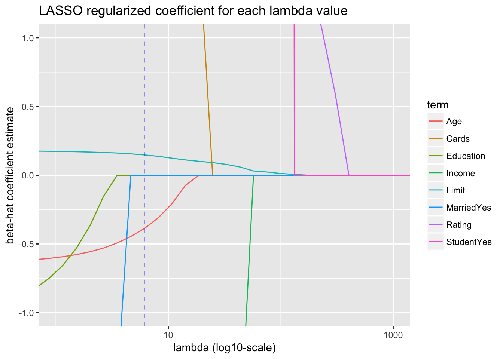

Binary outcomes
library(tidyverse)
library(broom)
library(okcupiddata)
profiles <- profiles %>%
as_tibble() %>%
# Create binary outcome variable y:
mutate(y = ifelse(sex=="f", 1, 0)) %>%
# Remove heights below 50 inches:
filter(height>50) %>%
# Add ID column:
mutate(ID = 1:n()) %>%
select(ID, sex, y, height) %>%
# Remove all rows with NA missing values:
na.omit()
profiles_train <- profiles %>%
sample_frac(0.5)
profiles_test <- profiles %>%
anti_join(profiles_train, by="ID")
Logistic regression via glm
Fit/train model
model_formula <- as.formula(y~height)
model_logistic <- glm(model_formula, data=profiles_train, family="binomial")
# 1.a) Extract regression table in tidy format
model_logistic %>%
broom::tidy(conf.int=TRUE)
| (Intercept) |
43.7522830 |
0.4970786 |
88.01885 |
0 |
42.785242 |
44.7338355 |
| height |
-0.6515739 |
0.0073586 |
-88.54583 |
0 |
-0.666105 |
-0.6372586 |
# 1.b) Extract point-by-point info in tidy format
model_logistic %>%
broom::augment() %>%
as_tibble() %>%
sample_n(5)
| 0 |
72 |
-3.1610371 |
0.0370102 |
-0.2881258 |
5.34e-05 |
0.8681114 |
1.10e-06 |
-0.2881335 |
| 0 |
67 |
0.0968323 |
0.0171323 |
-1.2187985 |
7.32e-05 |
0.8680845 |
4.03e-05 |
-1.2188432 |
| 0 |
67 |
0.0968323 |
0.0171323 |
-1.2187985 |
7.32e-05 |
0.8680845 |
4.03e-05 |
-1.2188432 |
| 1 |
67 |
0.0968323 |
0.0171323 |
1.1365761 |
7.32e-05 |
0.8680882 |
3.32e-05 |
1.1366177 |
| 0 |
73 |
-3.8126110 |
0.0437024 |
-0.2090453 |
4.04e-05 |
0.8681122 |
4.00e-07 |
-0.2090495 |
# 1.c) Extract summary stats info in tidy format
model_logistic %>%
broom::glance()
| 40381.44 |
29956 |
-11286.97 |
22577.94 |
22594.56 |
22573.94 |
29955 |
Predict outcomes for test data
# 2. Make predictions on test data
# Method 1:
# -input: profiles_test is a data frame
# -output: log_odds_hat is a vector of log odds
log_odds_hat <- predict(model_logistic, newdata=profiles_test)
p_hat <- 1/(1 + exp(-log_odds_hat))
# Method 2: All new variables start with a period
model_logistic %>%
broom::augment(newdata=profiles_test) %>%
as_tibble() %>%
mutate(p_hat = 1/(1 + exp(-.fitted))) %>%
sample_n(5)
| 59113 |
m |
0 |
71 |
-2.509463 |
0.0306253 |
0.0751974 |
| 49914 |
f |
1 |
59 |
5.309423 |
0.0648309 |
0.9950796 |
| 49214 |
m |
0 |
69 |
-1.206316 |
0.0199779 |
0.2303536 |
| 32598 |
f |
1 |
65 |
1.399980 |
0.0249220 |
0.8021807 |
| 57406 |
f |
1 |
64 |
2.051554 |
0.0307791 |
0.8861045 |
Plot
fitted_model <- model_logistic %>%
broom::augment() %>%
as_tibble() %>%
mutate(p_hat = 1/(1 + exp(-.fitted)))
predictions <- model_logistic %>%
broom::augment(newdata=profiles_test) %>%
mutate(p_hat = 1/(1 + exp(-.fitted)))
# Logistic regression is fitted in log-odds(p) space
ggplot(NULL) +
geom_line(data=fitted_model, aes(x=height, y=.fitted), col="blue") +
geom_point(data=predictions, aes(x=height, y=.fitted), col="red") +
labs(x="height (in inches)", y="Fitted log-odds of p_hat", title="Fitted log-odds of probability of being female vs height")

# Convert back to probability space
ggplot(NULL) +
geom_line(data=fitted_model, aes(x=height, y=p_hat), col="blue") +
geom_point(data=predictions, aes(x=height, y=p_hat), col="red") +
labs(x="height (in inches)", y="p_hat", title="Fitted probability of being female vs height") +
# Add observed binary y's, and put a little random jitter to the points
geom_jitter(data=fitted_model, aes(x=height, y=y), height=0.05, alpha=0.05)
ROC curve
profiles_train_augmented <- model_logistic %>%
broom::augment() %>%
as_tibble() %>%
mutate(p_hat = 1/(1+exp(-.fitted)))
library(ROCR)
# This bit of code computes the ROC curve
pred <- prediction(predictions = profiles_train_augmented$p_hat, labels = profiles_train_augmented$y)
perf <- performance(pred, "tpr","fpr")
# This bit of code computes the Area Under the Curve
auc <- as.numeric(performance(pred,"auc")@y.values)
auc
## [1] 0.9077422
# This bit of code prints it
plot(perf, main=paste("Area Under the Curve =", round(auc, 3)))
abline(c(0, 1), lty=2)

Continuous outcomes
library(tidyverse)
library(broom)
# Continuous outcome:
mtcars <- mtcars %>%
mutate(ID = 1:n()) %>%
select(ID, mpg, hp) %>%
as_tibble()
mtcars_train <- mtcars %>%
sample_frac(0.5)
mtcars_test <- mtcars %>%
anti_join(mtcars_train, by="ID")
Regression via lm
Fit/train model
model_formula <- as.formula("mpg ~ hp")
model_lm <- lm(model_formula, data=mtcars_train)
# 1.a) Extract regression table in tidy format
model_lm %>%
broom::tidy(conf.int=TRUE)
| (Intercept) |
26.624491 |
1.9116157 |
13.927742 |
0.0000000 |
22.5244829 |
30.7244987 |
| hp |
-0.048168 |
0.0108536 |
-4.437963 |
0.0005622 |
-0.0714468 |
-0.0248893 |
# 1.b) Extract point-by-point info in tidy format
model_lm %>%
broom::augment() %>%
as_tibble() %>%
sample_n(5)
| 15.5 |
150 |
19.39929 |
0.7926221 |
-3.8992854 |
0.0638516 |
3.057243 |
0.0562940 |
-1.2847906 |
| 13.3 |
245 |
14.82332 |
1.2056518 |
-1.5233220 |
0.1477349 |
3.222831 |
0.0239843 |
-0.5260464 |
| 15.8 |
264 |
13.90813 |
1.3688767 |
1.8918707 |
0.1904443 |
3.202498 |
0.0528527 |
0.6703287 |
| 15.2 |
180 |
17.95424 |
0.8118945 |
-2.7542443 |
0.0669944 |
3.157634 |
0.0296677 |
-0.9090338 |
| 17.3 |
180 |
17.95424 |
0.8118945 |
-0.6542443 |
0.0669944 |
3.249737 |
0.0016740 |
-0.2159323 |
# 1.c) Extract summary stats info in tidy format
model_lm %>%
broom::glance()
| 0.5845144 |
0.5548368 |
3.136753 |
19.69551 |
0.0005622 |
2 |
-39.92578 |
85.85155 |
88.16932 |
137.7491 |
14 |
Predict outcomes for test data
# 2. Make predictions on test data
# Method 1:
# -input: mtcars_test is a data frame
# -output: y_hat is a vector
y_hat <- predict(model_lm, newdata=mtcars_test)
# Method 2: All new variables start with a period
model_lm %>%
broom::augment(newdata=mtcars_test) %>%
as_tibble() %>%
sample_n(5)
| 28 |
30.4 |
113 |
21.18150 |
0.9392238 |
| 18 |
32.4 |
66 |
23.44540 |
1.2921813 |
| 30 |
19.7 |
175 |
18.19508 |
0.7995585 |
| 9 |
22.8 |
95 |
22.04853 |
1.0593770 |
| 21 |
21.5 |
97 |
21.95219 |
1.0449057 |
Plot
fitted_model <- model_lm %>%
broom::augment() %>%
as_tibble()
predictions <- model_lm %>%
broom::augment(newdata=mtcars_test)
ggplot(NULL) +
geom_point(data=fitted_model, aes(x=hp, y=mpg)) +
geom_line(data=fitted_model, aes(x=hp, y=.fitted), col="blue") +
geom_point(data=predictions, aes(x=hp, y=.fitted), col="red") +
labs(x="Horse power", y="Miles per gallon")

LOESS
Fit/train model
model_formula <- as.formula("mpg ~ hp")
model_loess <- loess(model_formula, data=mtcars_train, span=0.9)
# 1.a) Extract point-by-point info in tidy format
model_loess %>%
broom::augment() %>%
as_tibble() %>%
sample_n(5)
| 16.4 |
180 |
16.50306 |
0.6439809 |
-0.1030618 |
| 30.4 |
52 |
30.66447 |
1.3261716 |
-0.2644678 |
| 27.3 |
66 |
27.28707 |
0.9079373 |
0.0129277 |
| 13.3 |
245 |
15.11083 |
0.9180818 |
-1.8108306 |
| 17.3 |
180 |
16.50306 |
0.6439809 |
0.7969382 |
Predict outcomes for test data
# 2. Make predictions on test data
# Method 1:
# -input: mtcars_test is a data frame
# -output: y_hat is a vector
y_hat <- predict(model_loess, newdata=mtcars_test)
# Method 2: All new variables start with a period
model_loess %>%
broom::augment(newdata=mtcars_test) %>%
sample_n(5)
| 11 |
20 |
33.9 |
65 |
27.51394 |
0.9309295 |
| 10 |
18 |
32.4 |
66 |
27.28707 |
0.9079373 |
| 15 |
30 |
19.7 |
175 |
16.68050 |
0.6371232 |
| 4 |
9 |
22.8 |
95 |
21.70766 |
0.6938263 |
| 12 |
21 |
21.5 |
97 |
21.39620 |
0.7001607 |
Plot
fitted_model <- model_loess %>%
broom::augment() %>%
as_tibble()
predictions <- model_loess %>%
broom::augment(newdata=mtcars_test) %>%
as_tibble()
ggplot(NULL) +
geom_point(data=fitted_model, aes(x=hp, y=mpg)) +
geom_line(data=fitted_model, aes(x=hp, y=.fitted), col="blue") +
geom_point(data=predictions, aes(x=hp, y=.fitted), col="red") +
labs(x="Horse power", y="Miles per gallon")
Splines
Fit/train model
model_spline <- smooth.spline(x=mtcars_train$hp, y=mtcars_train$mpg, df = 4)
# 1.a) Extract point-by-point info in tidy format
model_spline %>%
broom::augment() %>%
as_tibble() %>%
sample_n(5)
| 150 |
15.5 |
1 |
17.42386 |
-1.9238600 |
| 52 |
30.4 |
1 |
28.85336 |
1.5466406 |
| 105 |
18.1 |
1 |
21.17470 |
-3.0747032 |
| 66 |
27.3 |
1 |
26.66150 |
0.6385012 |
| 335 |
15.0 |
1 |
14.82653 |
0.1734718 |
# 1.b) Extract summary stats info in tidy format
model_spline %>%
broom::glance()
| 3.99955 |
0.0029952 |
4.335081 |
36.62866 |
3 |
0.5467759 |
0.0029952 |
Predict outcomes for test data
# 2. Make predictions on test data
# Method 1:
# -input: mtcars_test$hp is a vector
# -output: is a list with two slots: x & y
spline_fitted <- predict(model_spline, x=mtcars_test$hp)
# Convert y_hat to tibble data frame with x, y columns
spline_fitted <- spline_fitted %>%
as_tibble() %>%
rename(hp = x, .fitted = y)
y_hat <- spline_fitted$.fitted
Plot
fitted_model <- model_spline %>%
broom::augment() %>%
as_tibble() %>%
rename(hp = x, mpg = y)
predictions <- mtcars_test %>%
mutate(.fitted = y_hat)
ggplot(NULL) +
geom_point(data=fitted_model, aes(x=hp, y=mpg)) +
geom_line(data=fitted_model, aes(x=hp, y=.fitted), col="blue") +
geom_point(data=predictions, aes(x=hp, y=.fitted), col="red") +
labs(x="Horse power", y="Miles per gallon")